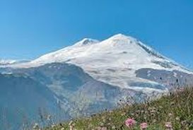

Эльбру́с (раннее название Эльборус) — стратовулкан на Кавказе (5642 метра над уровнем моря) — самая высокая горная вершина России и Европы при условии проведения границы между Европой и Азией по Главному Кавказскому хребту или южнее (в иных случаях высочайшей вершиной Европы считается альпийская гора Монблан).
Эльбрус включён в список высочайших вершин частей света «Семь вершин». Стекающая с его склонов талая ледниковая вода питает одни из наиболее крупных рек Северного Кавказа: Кубань, Малку и Баксан. За счёт хорошо развитой транспортной и сопутствующей инфраструктуры Эльбрус и прилегающие к нему районы очень популярны в рекреационном, спортивном, туристическом и альпинистском плане. На седловине Эльбруса (5416 м), разделяющей его Восточную (5621 метров) и Западную (5642 метров) вершины, расположен самый высокогорный приют Кавказа.
Эльбрус входит в список десяти вершин Российской Федерации для присвоения звания «Снежный барс России».